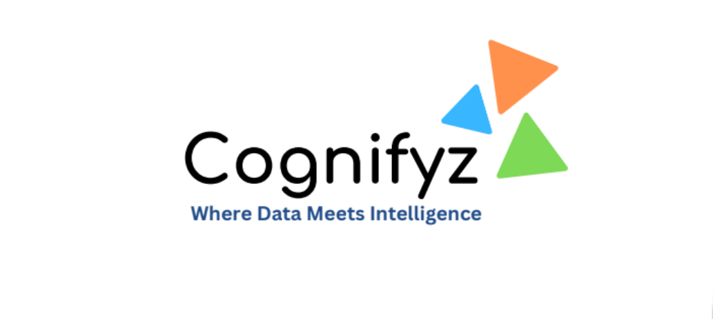

Cognifyz Technologies-Where Data meets intelligence.
Cognifyz Technologies is Nagpur, Maharashtra based is a technology company that provides software solutions for businesses.
The company offers a range of products and services, including artificial intelligence (AI),
machine learning (ML), and data analytics tools.
One of the main offerings of Cognifyz Technologies is their AI-powered chatbot platform,
which can be integrated with various communication channels such as websites, social media, and messaging apps.
The chatbot platform allows businesses to automate their customer support and engagement, reduce response time, and improve customer satisfaction.
Cognifyz Technologies also provides training programs to enhance skills and knowledge in these areas.
The company focuses on delivering innovative and cutting-edge solutions to meet the evolving needs of businesses.
Cognifyz is Offically AICTE approved

The Cognifyz Technologies Internship Program is a structured learning experience designed to provide students and
individuals with hands-on exposure to real-world projects in the fields of technology, software development, and related areas.
Apply Now
Learn More